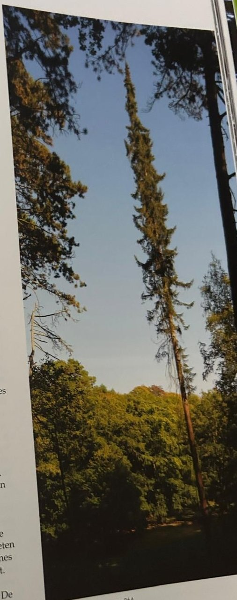
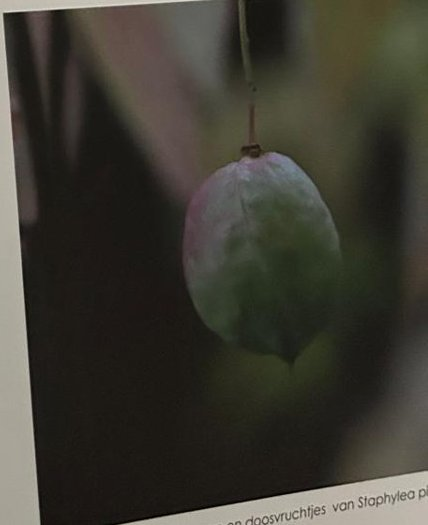

Groepen › Oude Wereld
26. Bosnië en Herzegovina, Dinarische Alpen

De Balkan telt rijke wouden met Zuid-Europese boomsoorten en plantensoorten die in bepaalde streken endemisch zijn en daarom minder vertrouwd voor ons. Arboretumgroep 26 focust op het grensgebied tussen Bosnië enHerzegovina enerzijds en Montenegro anderzijds, de streek rondom de Velicki Stolac berg. Hij mikt op vijf bostypen, opeenvolgende etages opgaand op de berghellingen. Het Illyrische eikenbos kent verscheidene eikensoorten : Donzige eik, Hongaarse eik, Moseik en andere. Begeleiders zijn onder meer Tamme kastanje, Oosterse haagbeuk, Europese hopbeuk, Pluimes en Italiaanse esdoorn. Het gemengde beukenbos met Gewone zilverspar gaat over in naaldbos met Zwarte den, Fijnspar en de endemische soorten Servische spar en Bosnische den. In het subalpiene dennenbos staat de Balkanden, een in Europa zeldzame vijfnaalder, in zuivere bestanden of in menging met Fijnspar, Grove den en Bergden.
Uit het boek
2,74 ha · 34 soorten · 895 bomen · weerstation Sarajevo
- De Servische spar, een relict van voor de laatste ijstijd: zijn smalle silhouet zie je vanaf de graslanden van de Paardendelle.
- Vier vegetatiezones, van Illyrisch eikenbos (26A) tot de Balkanden (26D).


Bron: Geografisch Arboretum Tervuren. Een wereldreis rond bomen (2020), p. 206 en volgende.
Deelgroepen
- 26A – Bosnië-Herzegovina, laaggebergte
- 26B – Bosnië-Herzegovina, middengebergte
- 26C – Bosnië-Herzegovina, hooggebergte
- 26D – Montenegro
Soorten in deze groep (34)
- Picea omorikaServische spar · 241 bomen
- Picea abiesFijnspar · 135 bomen
- Pinus nigraZwarte den · 89 bomen
- Ostrya carpinifoliaEuropese hopbeuk · 70 bomen
- Pinus peuceBalkanden · 50 bomen
- Abies albaGewone zilverspar · 44 bomen
- Pinus heldreichiiBosnische den · 44 bomen
- Fagus sylvaticaGewone beuk · 33 bomen
- Quercus cerrisMoseik · 27 bomen
- Fraxinus ornusGewone pluim-es · 20 bomen
- Acer pseudoplatanusGewone esdoorn · 14 bomen
- Taxus baccataGewone taxus · 14 bomen
- Pinus sylvestrisGrove den · 12 bomen
- Acer cappadocicumCappodicische esdoorn · 11 bomen
- Acer japonicumJapanse rondbladesdoorn · 10 bomen
- Ligustrum vulgareGewone liguster · 10 bomen
- Euonymus europaeusWilde kardinaalsmuts · 8 bomen
- Euonymus latifolius8 bomen
- Viburnum lantanaWollige sneeuwbal · 8 bomen
- Tilia tomentosaZilverlinde · 7 bomen
- Quercus roburZomereik · 6 bomen
- Sorbus torminalisElsbes · 6 bomen
- Betula pendulaRuwe berk · 3 bomen
- Corylus colurnaTurkse boomhazelaar · 3 bomen
- Lonicera caeruleaBlauwe kamperfoelie · 3 bomen
- Sorbus ariaMeelbes · 3 bomen
- Staphylea pinnataEuropese pimpernoot · 3 bomen
- Betula pubescensZachte berk · 2 bomen
- Carpinus betulusGewone haagbeuk · 2 bomen
- Carpinus orientalisOosterse haagbeuk · 2 bomen
- Quercus frainettoHongaarse eik · 2 bomen
- Carpinus species1 boom
- Castanea sativaTamme kastanje · 1 boom
- Sorbus species1 boom
Tekst en foto: arboretum-tervuren.be (Koninklijke Schenking), met toestemming gebruikt.